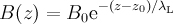

Quickstart for WKM users
Introduction
musrfit is a program suite for analyzing μSR data. It is implemented in C++/ROOT and uses the MINUIT2 libraries developed at CERN for fitting data.
Installation instructions for Linux, MS Windows, and Mac OS X can be found here. The full user manual is available here.In principle the programs can be used in the same fashion as
WKM (wkmfit, wkmview).
E.g., for fitting data as defined in the input file 8472.msr one types:musrfit 8472.msrfor plotting data and the corresponding fit one calls:
musrview 8472.msrAdditionally, there are editors called
musrgui/musredit available which can do everything the emacs plug-in for WKM is capable of and even more. However, before going to use only musrgui / musredit it is strongly recommended to read at least this "Quickstart" since there are a few differences between the programs as well as new features which are partially described in the following.
Differences between WKM and musrfit msr files
The msr file format of WKM has some weaknesses and has therefore been extended for the use with musrfit. Existing WKM files can be converted using the small utility msr2msr. The changes are: - The
musrfitmsr and mlog files contain an additional column in the FITPARAMETER block for the representation of positive uncertainties ifMINOSwas called during fitting. In that case the Step column holds the negative uncertainties. If there has not been performed an error analysis usingMINOS, the symmetric error can be found in the Step column, whereas the Pos_Error column contains only none entries. The beginning of the FITPARAMETER block then might look like thisFITPARAMETER # No Name Value Step Pos_Error Boundaries 1 Phase 35.8359 -3.94496 3.93749 2 Asy 0.04501 -0.00208 0.00211 0 0.33 3 Field 143.212 -0.27960 0.27885 100 200 4 Rate 0.14245 -0.02501 0.02279 0 1or thatFITPARAMETER # No Name Value Step Pos_Error Boundaries 1 Phase 35.8359 3.94496 none 2 Asy 0.04501 0.00208 none 0 0.33 3 Field 143.212 0.27960 none 100 200 4 Rate 0.14245 0.02501 none 0 1 - Blank lines and lines beginning with # are handled as comments. Therefore this works:
# Signal 1, first field, ... 2 Asy1 0.04501 -0.00208 0.00211 0 0.33 3 Field1 143.212 -0.27960 0.27885 100 200 4 Rate1 0.14245 -0.02501 0.02279 0 1 # Signal 2, second field, ... 5 Asy2 0.14501 -0.00208 0.00211 0 0.33 6 Field2 343.212 -2.27960 2.27885 0 1000 7 Rate2 0.42045 -0.02501 0.02279 0 1 - In the RUN block, the first line of each run has the format:
RUN 2008/lem08_his_8472 MUE4 PSI ROOT-NPP (name beamline institute data-file-format)
where the supported μSR-data file formats are: ROOT-NPP, ROOT-PPC, WKM, PSI-BIN, PSI-MDU, MDU-ASCII, MUD, and NEXUS - The commands SET BATCH and END RETURN may be omitted in the COMMANDS block.
Selected new features in musrfit
- If single-histogram fits are done, the normalization and background constants are given either "per nanosecond" or "per rebinned bin". The nanosecond normalization allows to change the binning without the need of re-doing the fit to the data.
- The use of functions in the RUN block is now possible for the normalization parameter, e.g. for the definition of an α parameter in simultaneous single-histogram fits of two histograms.
- Apart from the default χ2 minimization, when doing single-histogram fits (fit type 0) in
musrfitthere is also the possibility to do a log-likelihood maximization instead. For switching, just put MAX_LIKELIHOOD in the COMMANDS block. - Since
musrfitinvokesMINUIT2instead ofMINUITthere are the following advantages compared toWKM:- No ten character restriction on parameter names
- No restriction on the number of parameters used for a fit (apart from the computer memory)
- Possibility to constrain the parameters to semi-defined intervals (like par > a or par < b). The FITPARAMETER-block syntax in the msr input file is:
FITPARAMETER # No Name Value Step Pos_Error Boundaries # Specify only a lower boundary for the parameter 1 Asy1 0.04501 -0.00208 0.00211 0 none # Specify only an upper boundary for the parameter 2 Rate1 0.14245 -0.02501 0.02279 none 10 # Specify lower and upper boundaries for the parameter 3 Asy2 0.14501 -0.00208 0.00211 0 0.33 # Do not specify boundaries at all 4 Field2 343.212 -2.27960 2.27885 5 Rate2 0.42045 -0.02501 0.02279 none none
- The restriction of only ten mapped parameters is lifted!
- The supported table functions in
WKMhave been replaced by direct integrations inmusrfit. - Some constants for use in the FUNCTIONS block are predefined:
- gamma_mu = γμ/2π = 0.0135538817 MHz/G
- pi = π = 3.14159265358979323846
- As theory function also the so called skewed Gaussian can be chosen. The properties of this function are summarized in a memo
 . The function is called in the THEORY block as follows:
. The function is called in the THEORY block as follows: skewedGss 1 2 3 4 (phase frequency rate_m rate_p)
- After fitting it is possible to keep the
MINUIT2output including the correlation matrix of the parameters. Callingmusrfitwith the --keep-mn2-ouput or -k option will provide you an ASCII and a ROOT file with the complete output, e.g.musrfit 8472.msr --keep-mn2-ouput
generates8472-mn2.outputand8472-mn2.root(and of course8472.mlog). - The PLOT block has been extended. Additionally to the old range options for instance it is possible to specify individual plot ranges for each run, change the binning used for the data presentation with a global packing parameter for all runs or present the data on (semi-)logarithmic scales. For details on this options refer to the manual.
- It is possible to have multiple PLOT blocks within a single msr file. Each PLOT block generates an individual
ROOTcanvas. - For passing options to the Fourier transformation a new FOURIER block has been created. Here it is possible to specify parameters like the number of points used for the discrete transform or the apodization that should be used. For details on the FOURIER block refer to the manual.
- For checking the initial values of the given fit parameters one might use the --chisq-only or -c option of
musrfit. Instead of fitting the datamusrfitcalculates χ2 only once and sends the result to the standard output if called with this option. - There is the possibility to define a few external parameters in the XML file
musrfit_startup.xmllocated in the binary directory. At the moment one can set various paths to the data files or the colors and markers as well as the default settings for the built-in Fourier transform which should be used inmusrview. For details refer to the manual. - Through the ROOT-dictionary mechanism
musrfitsupports the definition of external fit functions. For details, refer to the manual. - Yet another useful feature implemented in
musrfitis the addition of several μSR runs into one "combined run" with increased statistics. In order to do so an ADDRUN line has to be added to the RUN block after the line containing the RUN statement, e.g.:RUN 2007/lem07_his_2018 MUE4 PSI ROOT-NPP ADDRUN 2007/lem07_2019_rb1_npp MUE4 PSI WKM ADDRUN 2007/lem07_2020 MUE4 PSI PSI-BIN
It is possible to add more than one ADDRUN line which might even be stored in files with different formats. The remaining RUN-block statements (with the exception of t0) then refer to the "combined run". For further details refer to the manual. -
musrfitalso supports one-dimensional fitting of non-μSR data stored in ASCII files or in the DB format. For this purpose the new fit and plot type 8 (non-muSR fit/plot) has been introduced. Theory functions like simplExpo or simpleGss accept a second argument, the so called "time shift t1": e-λt → e-λ(t-t1)
The further syntax of the msr input file can be seen in the following full example for fitting the exponential decay of a magnetic field into a local superconductor: superconductor.msr ############################################################### FITPARAMETER # Nr. Name Value Step Pos_Error Boundaries 1 B0 50.056 0 none 2 z0 10.9405 -2.68635 2.37574 3 lambdaL 206.121 -6.21524 7.02819 ############################################################### THEORY asymmetry 1 simplExpo fun1 2 (rate tshift) ############################################################### FUNCTIONS fun1 = 1.0 / par3 ############################################################### RUN superconductor-data MUE4 PSI DB (name beamline institute data-file-format) fittype 8 (non muSR fit) map 0 0 0 0 0 0 0 0 0 0 xy-data range field fit 0.00 150.00 packing 1 ############################################################### COMMANDS MINIMIZE MINOS SAVE ############################################################### PLOT 8 (non muSR plot) runs 1 range 0.00 140.00 ############################################################### STATISTIC --- 2008-10-10 14:02:32 chisq = 10.0, NDF = 10, chisq/NDF = 1.0In the above examplemusrfitreads the data from the filesuperconductor-data.db; the x and y data are specified by the DB parameter namesrangeandfield. An alternative specification of the x and y data by the parameter number in the DB file is also possible!
Ideas, requests, problems regarding PSI Wiki? Send feedback